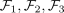
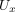
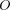
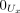
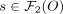
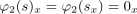
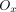
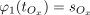

exactness of sheaves and exactness on stalks
1. Proposition
Let  be a grothendieck category,
be a grothendieck category,  a topological space and
a topological space and

be valued sheaves and
a sequence (see: zero sheaf)
TFAE:
- for arbitrary
 , the induced sequence by the stalk functor
, the induced sequence by the stalk functor
is exact
- the sequence
is exact
2. Proof
2.1. 1)  2)
2)
slightly sloppy: assuming concrete category:
2.1.1.
Assume , then for each  it follows, that
it follows, that
Taking is the only section making this diagram commute:
By assumption, for each there exists an open subset

such thatas both and

have the same stalkapplying glueing for

gives
2.1.2. b)
Let

such that . Then for each stalk at it holds, that

Thus there exists with . Choose a representative , then there exists for an open subset

such that